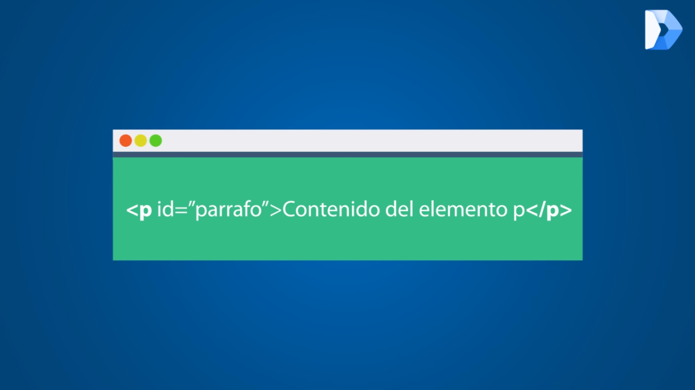

Que es HTML
La primera versión de HTML fue publicada por un científico de la computación británico llamado Timohty John Berners-Lee en 1991 y contenía inicialmente pocos elementos,
los cuales puedes conocer aquí. Sobre Tim, debes saber también que es conocido como el padre de la web, es fundador de la W3C (World Wide Web Consortium), creador del
protocolo HTTP (HyperText Transfer Protocol), creador de la URL (Uniform Resource Locator) y creador del primer navegador web.
Sobre la historia de HTML, en 1995 se publicó el estándar HTML 2.0, el primer estándar oficial de HTML. En 1997 se publicó la versión HTML 3.2 y es la primera especificación
HTML publicada por la W3C. En 1999 se publicó la versión HTML 4.1 y en el 2014 se publica la versión definitiva de HTML 5.
HTML es un lenguaje formado por elementos, un elemento se ve como todo el texto que se muestra en la Imagen 3, los elementos nos ayudan a estructurar y dar significado a las
partes de un documento HTML, estos elementos a su vez están conformados por contenido, etiquetas y atributos.
Las etiquetas nos sirven para delimitar el inicio y el fin de un elemento, como en el ejemplo, vemos un elemento que utiliza la etiqueta de apertura para indicar el inicio de un
párrafo, y la etiqueta de cierre para indicar el fin de un párrafo. El contenido de un elemento pueden ser caracteres, comentarios u otro elemento delimitado dentro de las etiquetas
de inicio y de cierre, en el ejemplo pueden ver que el contenido es: “Contenido del elemento p”. Sobre los atributos de un elemento debes saber que siempre se expresan en la etiqueta
de inicio y tienen un nombre (Ej. id) y un valor (Ej. parrafo), en el ejemplo vemos el uso del atributo id con su respectivo valor.

Bibliografia:
¿Qué es HTML? (2016, mayo 6). DevCode Tutoriales. Recuperado el 27 de Octubre de 2019 de https://devcode.la/tutoriales/que-es-html/